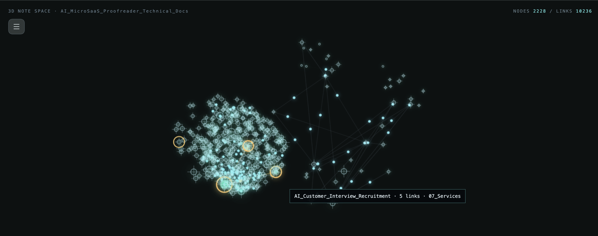
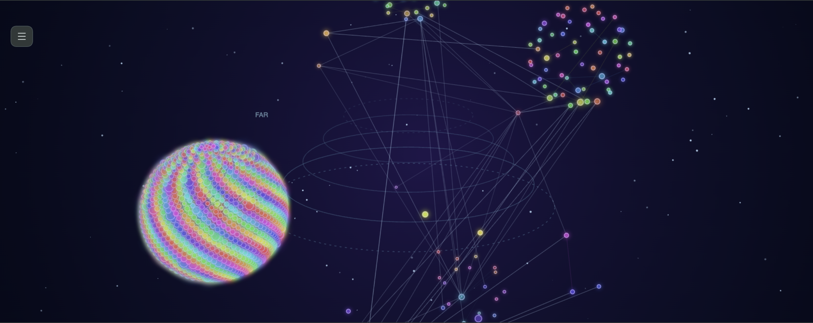
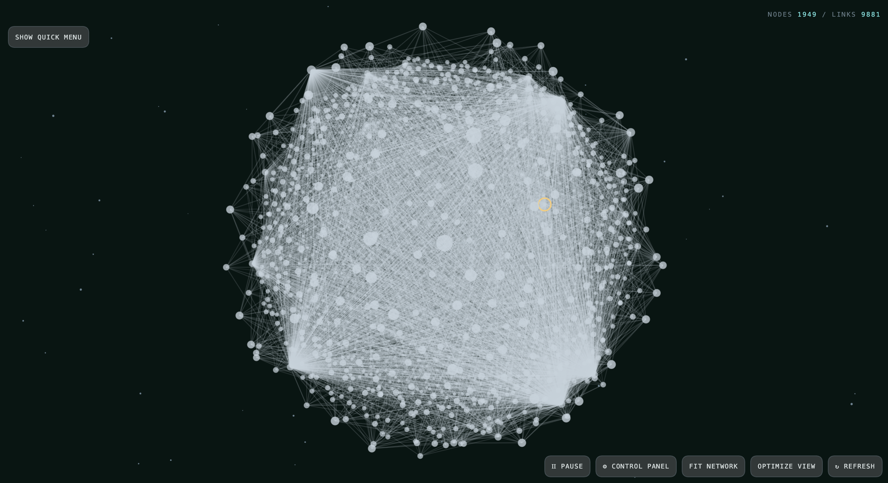
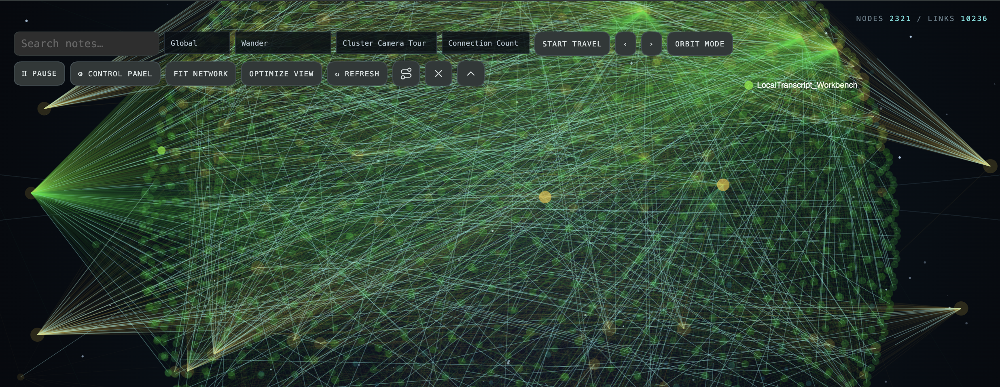
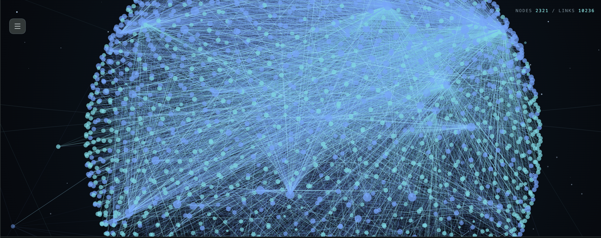

Explore your note network
View the whole vault, notes around the active note, or its direct neighbors. Search by note name and filter by folder, tag, last-modified date, or connection count. Folder and tag filters match case-insensitively.
Explore your Obsidian vault as an animated 3D note network. Find connections, travel through notes, and see folders as clusters. Install it once with these simple steps; no coding or build tools required.





Constellation 3D turns the links in your Obsidian vault into an interactive, animated 3D map. Notes appear as stars and their links as connecting paths, so you can explore how ideas relate and find parts of your vault you may have forgotten. It uses Obsidian's local metadata cache and Markdown note paths to build the graph. It does not read note bodies, edit notes, or upload vault data. The usual linked-note view uses Obsidian's resolved-link index; Include Floating Notes is off by default, and all Markdown note paths are listed only when that option is enabled or Orphan Hunt is selected.
View the whole vault, notes around the active note, or its direct neighbors. Search by note name and filter by folder, tag, last-modified date, or connection count. Folder and tag filters match case-insensitively.
Drag to orbit or use Pan mode. Arrow keys rotate and tilt, +/− zoom, and W/A/S/D pan. Space pauses or resumes animation; F fits the network, O optimizes the view, and R refreshes it. Shortcuts pause while you type in a control.
Choose Constellation, Timeline Map, Mind Palace, Circuit Minimal, Archive Fog, Focus Lens, Thread Weaver, Research Board, Signal Radar, Matrix Hacker, Star Map, Star System, Aqua Mint, Deep Space, Neon, Minimal, Soft Glow, Neural Bloom, Satellite View, Glass Minimal, Academic Light, or Ink Map. Star System shows notes as stars and folder clusters as planets with orbit rings. Its preset adds galaxy colors, a nebula, and cluster orbit motion.
Group notes by top-level folder, full folder path, or first tag, then arrange groups as spaced islands, a grid, or a spiral. Cross-cluster links are highlighted to make connections between groups easier to follow. Right-click a note to collapse or expand its cluster, isolate that cluster, or hide it.
The default Static Camera stays still until you move it. Choose Spaceflight to move along linked notes while star streaks rush past. Swarm coordinates cluster movement, Chaos gives notes more independent motion, and Blob Order makes clusters breathe and orbit. Moving Notes and Notes Orbit Clusters are also available from the Quick Menu and Control Panel.
Choose Auto, Balanced, or Performance under Control Panel → Performance → Rendering quality. Set maximum visible notes, maximum visible links, and animation frame rate in the same section. Auto lowers visual detail as graph size or draw time grows; active notes, cluster representatives, and route notes remain prioritized. Turn on Performance metrics in the same section to see graph build time, drawing time, and the active quality. Search also waits until you pause typing before rebuilding the graph.
Choose Nebula, Aurora, Deep Space Grid, Deep Void, Starfield, Horizon Perspective, Depth Bands, Topographic Contours, Blueprint Grid, Warm Paper, Black, or White backgrounds. FAR, MID, and NEAR perspective rings make depth easier to judge; toggle them under Control Panel → Appearance. Set particle count and color palette, and tune perspective depth, node initials, and cluster halos.
Choose flowing particles, pulses, drawing lines, or moving dashes for real note links, including links between clusters. Keep Link lines enabled; selecting a link animation starts motion automatically. Route previews have their own glow, comet, draw, and moving-dash effects.
Pause all motion or independently disable moving notes, animated links, route motion, and animated color profiles under Control Panel → Motion. Turn the scene background and background particles off separately under Appearance.
Choose which search fields, selectors, and action buttons appear under Control Panel → Interface → Quick Menu buttons. Compact controls use clear icons with helpful tooltips and accessible labels.
Drag a node to reposition it, drag the background to orbit, or switch to Pan Mode to move the whole view. Scroll to zoom.
Browse recent or forgotten notes, hubs, hidden gems, and orphans. Let the camera travel automatically or step through one note at a time.
Keep important nodes in place and hide distracting ones. Choose the route icon in the Quick Menu, click a start note and a destination note, and see their shortest linked route highlighted. Choose Clear Path to remove it; set Glow, Comet, Draw, or Moving Dashes under Control Panel → Motion → Route animation.
Choose from dozens of color profiles, including Aqua Mint, Archive Dust, Blueprint, City Nights, Cyberpunk, Moss & Gold, Nord, Prism Flow, Solar System, Star Map, Vaporwave, and custom palettes. Single-hue schemes stay within one color family; gradient and cluster schemes vary colors when they encode age, connections, or groups. Adjust labels, node initials, depth rings, cluster halos, node size, link thickness, and the FPS display.
Toggle the header, graph title, node and link totals, Quick Menu, bottom dashboard, individual counters, labels, links, icons, depth guides, and cluster halos.
Find settings in collapsible Camera, Performance, Appearance, Graph, Motion, Discovery, Interface, and Hidden Items sections. Camera, Performance, and Motion open first; node distance and cluster arrangement are grouped under Graph.
Click Open latest release at the top of this page. Under Assets, download main.js, manifest.json, and styles.css. Save all three files somewhere easy to find, such as your Downloads folder.
Open the folder where your Obsidian vault is stored. Inside it, open .obsidian, then plugins. If .obsidian or plugins is missing, open Obsidian for this vault once and check again. If plugins is still missing, create a folder named exactly plugins inside .obsidian.
In Finder, open your vault folder and press Command + Shift + . to show hidden folders.
In File Explorer, open your vault folder. Select View → Show → Hidden items.
Inside .obsidian/plugins, create a folder named exactly constellation-three-d. Move the three downloaded files directly into it. Do not make another folder around them.
Your final folder should look exactly like this:
Your vault/.obsidian/plugins/constellation-three-d/main.jsYour vault/.obsidian/plugins/constellation-three-d/manifest.jsonYour vault/.obsidian/plugins/constellation-three-d/styles.css
Check this carefully: manifest.json must be directly inside constellation-three-d, alongside the other two files.
Restart Obsidian. Open Settings → Community plugins. If Restricted mode is on, turn it off and confirm. Under Installed plugins, find Constellation 3D and switch it on.
Press Command/Ctrl + P to open the command palette, search for Open Constellation 3D, and select it. You can also use the orbit icon in the left ribbon.
Open the Control Panel in the Quick Menu. Camera, Performance, and Motion are open at the top; expand Appearance, Graph, Discovery, Interface, or Hidden Items to see more. Under Interface → Quick Menu buttons, choose which controls stay visible. Under Motion → Camera / note animation style, choose Static Camera, Spaceflight, Camera Orbit, Cluster Tour, Notes Orbit Clusters, Moving Notes, Swarm, Chaos, or Blob Order. To highlight a route, choose the route icon in the Quick Menu, click a start note and a destination note, then choose its effect under Motion → Route animation.
Constellation 3D is not listed? Confirm the path ends in .obsidian/plugins/constellation-three-d/manifest.json (with only one constellation-three-d folder), then restart Obsidian.
The graph is empty? Add links between notes using Obsidian's [[double brackets]], then click Refresh in Constellation 3D.
Still stuck? Open an issue on GitHub and include your operating system and Obsidian version.